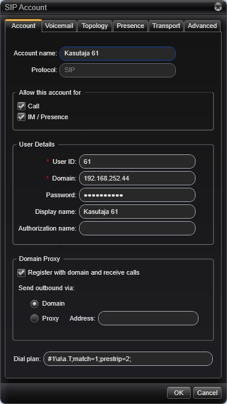

Sidevõrgud labor #3
Labor sooritati töökohal #6, kasutati seadeid variandist 1.
IP-telefoni ja arvutitelefoni seadistamine
{kind=link}

2 Kellaaja teadasaamine. IP-telefonil oma numbri tuvastamine
*60 - kellaaeg *65 - Minu telefoninumber3 IP-telefoni seadistamine olekusse „mitte segada“
Öeldakse, et #62 on hõivatud4 Videokõne
H.263 Videost loobumine: Video off (IP telefon) / Stop sending video (arvutitelefon)5 Kõnepost
Video salvestamine kõneposti ei ole laboris võimalik. Videokõne puhul salvestatakse ainult heli.6 Kõne suunamine
6.1 Kõne ajal suunatakse see edasi teisele numbrile - antud juhul lindistus 6.2 Tingimusteta - kõik kõned suunatakse antud numbrile, sõltumata liini olekust. Tingimusega - kõned suunatakse edasi ainult siis, kui liin on hõivatud7 Konverentskõne
Helistajatel palutakse öelda oma nimi. Esimene helistaja jääb ootemuusikaga ootama. Osalejate liitumisel teatab süsteem sellest nende nimega ning ootemuusika katkeb. Osalejate lahkumisel - kui on jäänud vaid üks osaleja - mängitakse uuesti ootemuusikat kuni liitub järgmine kõneleja.8 Kaja test
Viiteaeg 200ms - 300ms - see tulemus vastab enamike kõnelejate nõudmistele.9 Videokvaliteedi subjektiivne hinnang
32 kbps, 15fps - kujutis on eristatav, kuid teraline, kiired üleminekud halvasti nähtavad. 1024 kbps, 15fps - Kujutis on kvaliteetne, kuid kiired üleminekud on halvasti nähtavad 1024 kbs, 5fps - Kujutis on teraline, kiired liikumised on halvasti jälgitavad (viie raamiga sekundis ei saa kiireid liikumisi jäädvustada)10 Kõneliiklus võrgus
From: 192.168.252.44:10308 To: 192.168.252.76:6174411 Koodekite uurimine
 IP-telefonilt atvutitelefonile helistades videoedastus ei tööta.
Kahe IP-telefoni vahelises kõnes video edastamine töötab.
IP-telefonilt atvutitelefonile helistades videoedastus ei tööta.
Kahe IP-telefoni vahelises kõnes video edastamine töötab.
12 Veebikaamera eraldusvõime hindamine
| Maksimaalne | 640x480 | cif | qcif | |
|---|---|---|---|---|
| Kvaliteet | Väga hea, aeglane | Natuke teraline | Kvaliteet hea, kiire | Teraline, kiire |
| Eraldusvõime | 2592x1944 | 640x480 | 352x288 | 176x144 |
| Kaadrisagedus | 10fps | 30fps | 30fps | 30fps |
| Bitikiirus | 600 000 kb/s | 90 000 kbs | 30 000 kbs | 8700 kbs |